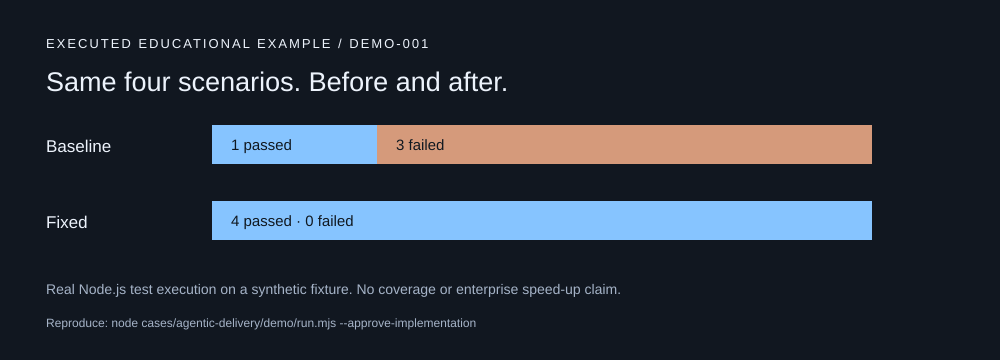

Задача системы
Задача в трекере редко содержит всю инженерную картину. Требования, API, дизайн и зависимости находятся в разных источниках. Изменение может затронуть несколько репозиториев, каждый со своими правилами и циклом публикации.
CASE STUDY / 001
Архитектура корпоративной агентской разработки: контекст, модули, агенты, проверки и управляемая публикация. Автор процесса — Андрей Карабань.
Последний год · 3 рабочих пространства · многомодульные мобильные продукты
Задача в трекере редко содержит всю инженерную картину. Требования, API, дизайн и зависимости находятся в разных источниках. Изменение может затронуть несколько репозиториев, каждый со своими правилами и циклом публикации.
Требования к процессу, общие правила, границы модулей и полномочий, распределение ролей, handoff между этапами, подключение MCP и CLI, проверки и порядок согласований. Постоянное ревью результатов использовал для совершенствования системы.
SYSTEM DESIGN
Оркестрация собирает нужные источники, определяет владельца поведения и выбирает маршрут по риску. Один активный исполнитель изменяет рабочую копию; проверки и замечания привязаны к конкретной ревизии.
Jira · спецификации · API · дизайн · карта зависимостей
Контекст · правила · Skills · маршрутизация по риску · handoff
Исполнитель · независимый review по риску · тесты · анализатор
Diff · проверки · описание MR · согласование публикации · CI
Из ссылки на Jira извлекаются требования и критерии приёмки. Неясности разрешаются до изменения кода.
task: DEMO-001 / status: intake
Учебный сценарий. Переключение этапов показывает процесс, а не запускает агентов или подключение к Jira.
Запустить воспроизводимый пример ↗REPRODUCIBLE EXAMPLE
В репозитории есть исполняемый учебный пример: воспроизведение ошибки поиска, ограниченное исправление в пакете, реальные тесты и подготовка описания MR. Он демонстрирует локальную часть поставки на вымышленных данных. Корпоративные интеграции Jira / GitLab и агентный runtime в этот пример не входят.
Запуск из корня репозитория
node cases/agentic-delivery/demo/run.mjs
node cases/agentic-delivery/demo/run.mjs \
--approve-implementationNode.js 20+. Внешние аккаунты, ключи и доступ к корпоративным проектам не нужны. Вывод сохраняется в локальный каталог .demo-output, который исключён из Git.
Запустить воспроизводимый пример ↗
Локальные проверки, CI, runtime и приёмка — разные результаты. Отчёт не подменяет реальное выполнение.
Автоматизированы повторяемые этапы. Инженер может проверить или остановить процесс на любом этапе.
Доступ к задаче не равен разрешению менять код. Готовое изменение не равно разрешению публиковать или сливать MR.
СЛЕДУЮЩИЙ ЭТАП
Приоритет — агентские системы, автоматизация и архитектура. Рассматриваю также Software Architect и Mobile Lead. Удалённо; офис и гибрид — Минск. Английский — B1.